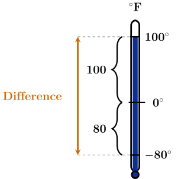

Rule for Subtracting Integers
Our work with elevation spans demonstrated that subtracting a number is
equivalent to adding its opposite. This rule is stated formally below.
Subtracting Integers
If \(a\) and \(b\) are integers, then \(a-b = a + (-b).\)
Subtracting \(-12\) is equivalent to adding positive \(12.\)
\(6 - (-12) = 6 + 12\)
Subtracting positive \(12\) is equivalent to adding \(-12.\)
\(6 - 12 = 6 + (-12)\)
Rewrite the subtraction problem as an equivalent addition problem. Then find the
answer.
\[ -6 - (-3) \]
\(-6 - (-3) = 6 + 3\) \(-6 - (-3) = -6 + (-3)\) \(-6 - (-3) = -6 + 3\) \(-6 - (-3) = 6 + (-3)\)
Answer \( = \answer {-3}\)
INSERT VIDEO!!!
Rewrite the subtraction problem as an equivalent addition problem. Then find the
answer.
\[ -2 - 10 \]
\(-2 - 10 = 2 + (-10)\) \(-2 - 10 = 2 + 10\) \(-2 - 10 = -2 + (-10)\) \(-2 - 10 = -2 + 10\)
Answer \( = \answer {-12}\)
Rewrite the subtraction problem as an equivalent addition problem. Then find the
answer.
\[ 5 - 8 \]
\(5 - 8 = -5 + 8\) \(5 - 8 = 5 + (-8)\) \(5 - 8 = -5 + (-8)\) \(5 - 8 = 5 + 8\)
Answer \( = \answer {-3}\) Rewrite the subtraction problem as an equivalent addition problem. Then find the
answer.
\[ -16 - (-1) \]
\(-16 - (-1) = -16 + 1\) \(-16 - (-1) = -16 + (-1)\) \(-16 - (-1) = 16 + 1\) \(-16 - (-1) = 16 + (-1)\)
Answer \( = \answer {-15}\) Rewrite the subtraction problem as an equivalent addition problem. Then find the
answer.
\[ 30 - (-10) \]
\(30 - (-10) = 30 + (-10)\) \(30 - (-10) = 30 + 10\) \(30 - (-10) = -30 + 10\) \(30 - (-10) = -30 + (-10)\)
Answer \( = \answer {40}\) How many degrees warmer is
\(100^\circ \)F than
\(-80^\circ \)F?

Show Alt Text
A vertical thermometer diagram labeled in degrees Fahrenheit, illustrating the
distance between negative 80 degrees and positive 100 degrees. The blue liquid inside
the thermometer reaches up to the 100-degree mark. A solid black line marks the
0-degree point in the middle. On the left side, visual brackets measure the distances
from negative 80 to 0 (labeled 80) and from 0 to 100 (labeled 100). Further to the
left, a double-headed orange arrow spans the entire height from negative 80 to 100,
labeled “Difference“ with dashed gray guide lines connecting it to the temperature
marks.
Write the subtraction problem to find the answer.
\(100 - 80\) \(100 - (-80)\) \(-100 - 80\) \(-100 - (-80)\)
Use the figure to rewrite the subtraction problem as an equivalent addition problem.
Then find the answer.
\(100 + (-80)\) \(-100 + 80 \) \(-100 + (-80)\) \(100 + 80\)
Answer \( = \answer {180} \ ^\circ \text {F}\)
Subtracting a Negative Number
You may have noticed that subtracting a negative number is equivalent
to adding a positive number. This becomes intuitive when we think in
terms of money. Imagine your checking account balance is $900 and the bank
realizes that they accidently charged you a $30 \((-30)\) overdraft fee last month. Once
the bank removes (subtracts) the overdraft fee, your net balance increases.
\begin{eqnarray*} 900-(-30) &=& 900 + 30 \\ &=& 930 \end{eqnarray*}
Therefore, removing a debt is the same as gaining a profit.